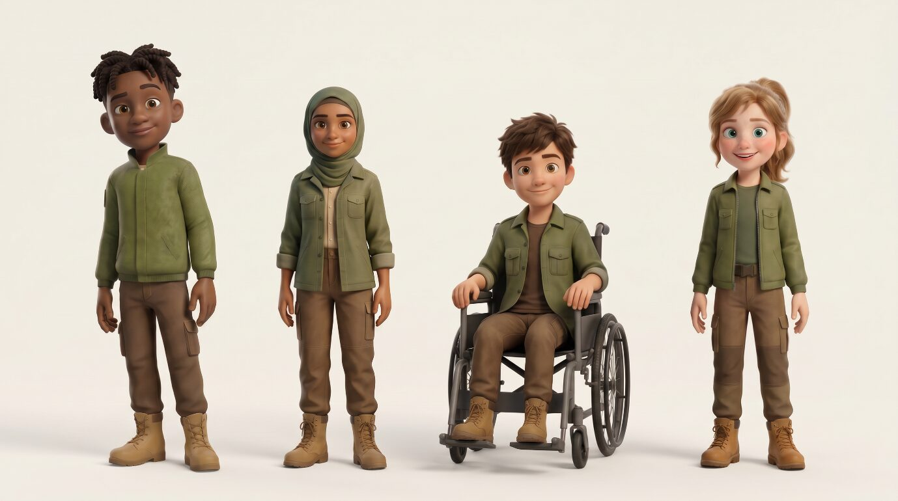
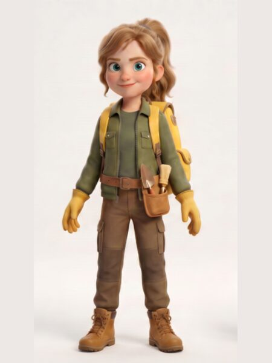
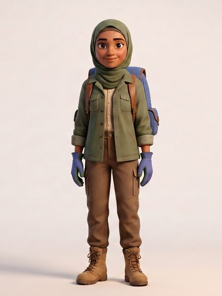
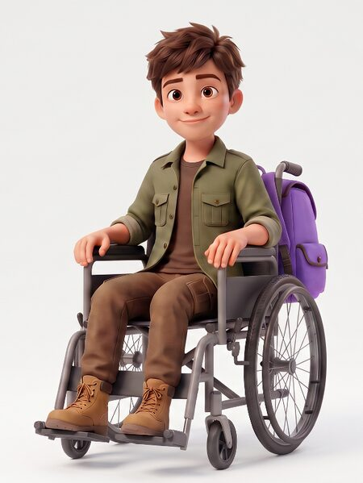
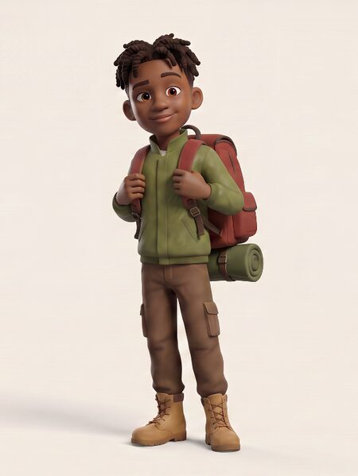

Join a team of underground heroes on soil-saving missions — a curriculum-aligned animated series that makes soil science irresistible for primary-age children.
The Soil Rangers are a team of curious young explorers on a mission to uncover the hidden world beneath our feet. Through exciting adventures, experiments and discoveries, they learn about soil layers, roots, organisms and why healthy soil is essential for a healthy planet.
The series is designed for children aged 4–12, with stories entertaining enough to captivate young viewers and science accurate enough to satisfy their teachers.
Episode 1 · Soil is NOT Dirt! · Watch on YouTube
Four curious young explorers, each with their own way of uncovering the hidden world beneath our feet.


Emma makes soil science simple, exciting and easy to understand. She connects what happens underground to plants, food, people and the wider world.

Thoughtful and observant, Lina understands how soil layers, water, roots and nutrients connect. She helps the team uncover the stories hidden within a soil profile.

Max examines soil structure, erosion and how water moves across the land. He enjoys finding practical ways to protect soil and help roots grow.

Timi loves searching for clues beneath the surface. With his magnifying glass and curious mind, he studies roots, soil and tiny signs of life that others might miss.
Each Soil Rangers episode comes with a full classroom activity pack — worksheets, discussion guides, and hands-on experiments.
Soil compaction experiment, vocabulary worksheet, and drawing activity.
Download FreeAll 4 Soil Rangers as printable colouring sheets for younger children.
Download FreeA3 classroom poster showing the Soil Rangers in their soil cross-section home.
Download Free